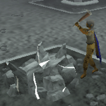
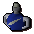
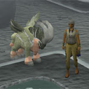
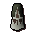

")
Gestohlene Schöpfung
Einführung | Lage | Voraussetzungen | Empfohlene Ausrüstung
Schöpfung | Überlebenskampf | Ziel des Spiels
Belohnungen | Entwicklung
Schöpfung | Überlebenskampf | Ziel des Spiels
Belohnungen | Entwicklung
Nur RuneScape-Mitglieder haben Zugang zu diesem Minispiel. Wenn ihr euch anmeldet, könnt auch ihr dieses Feature nutzen.
Dies ist ein 'sicheres' Minispiel. Allerdings verliert ihr jegliche Gegenstände, die ihr während des Spiels hergestellt habt und bei euch tragt, und es gibt keine Grabsteine. Wenn ihr das Gebet 'Gegenstandsschutz' benutzt, werdet ihr, wie immer, einen Gegenstand behalten.
Einführung

Eins der bizarren Phänomene ist eine Ebene, die einzig und allein aus 'heiligem Lehm' - dem Ursprung der Schöpfung - besteht. In grauer Vorzeit haben die Götter ihre Jünger und die verschiedensten Wesen, Landschaften und Pflanzen aus eben diesem Lehm erschaffen. Alles Lebendige - und alles Tote - wurde aus der seltsamen Substanz geformt.
Eine Gruppe von Mystikern hat ein Portal gefunden und gesichert, durch das man in ein Reich vor unserer Zeit vordringen kann. Sie suchen nach mutigen Abenteurern, die sich in der Urzeit erbitterte Schlachten liefern und damit den zweifelhaften Machenschaften der Mystiker dienen.
Lage

Falls ihr Lust auf Bewegung habt, könnt ihr von Edgeville oder Varrock aus auch einen flotten Marsch durch die niedrigstufige Wildnis machen.
Ihr müsst auf eurem Weg durch die Wildnis mit Angriffen von Wiedergänger rechnen. Lasst eure wertvollen Gegenstände daher lieber in der Bank.
Voraussetzungen
Man braucht keine besonderen Voraussetzungen, um Gestohlene Schöpfung zu spielen. Egal, was für eine Stufe ihr habt, ihr könnt immer zum Erfolg eures Teams beitragen. Da das Minispiel fertigkeiten- und kampfbasiert ist, kann es natürlich nicht schaden, einige hochstufige Skiller und Kämpfer auf eurer Seite zu haben.
Achtung: Für eure Tätigkeiten während Gestohlene Schöpfung verdient ihr keinerlei EP.
Empfohlene Ausrüstung
Ihr braucht keine besondere Ausrüstung, da ihr sowieso keine Gegenstände mitnehmen dürft.
Schöpfung
Der schnellste und einfachste Weg, um mit 'Gestohlene Schöpfung' zu beginnen, ist ein Gespräch mit dem Hauptmystiker. Er kann euch die Spielregeln erklären und wird euch danach in einen umzäunten Bereich schicken, wo ihr auf den Beginn eines Jeder-gegen-jeden-Spiels warten könnt. Während ihr wartet, wird euch in einem kleinen Fenster angezeigt, welche Kampf- und Fertigkeitsstufen die Teams haben.
Wenn ihr in einem Clan seid, könnt ihr andere Clans herausfordern. Dazu müsst ihr euch in den größeren Warteraum begeben. Das erste Clanmitglied, das diesen Raum betritt, wird zum Clan-Oberhaupt bestimmt. Clan-Oberhäupter können die anderen Anführer vor Ort herausfordern oder sich mit ihnen verbünden, indem sie auf sie rechtsklicken und 'Herausfordern' bzw. 'Verbünden' auswählen. Um ein Bündnis anzunehmen, müsst ihr nur auf die Person klicken, die euch das Angebot geschickt hat, und 'Verbünden' auswählen. Jede Fraktion kann maximal aus drei Clans bestehen.
Nach einer kurzen Wartezeit - und vorausgesetzt, es haben sich genügend Teilnehmer gefunden - werdet ihr in das Land vor unserer Zeit versetzt und der Kampf kann beginnen.

Sobald ihr euch der Konkurrenz stellen wollt, könnt ihr auf eins der Portale klicken und draußen Angst und Schrecken verbreiten (oder Lehm sammeln, Werkzeuge herstellen, eure Gegner bestehlen und vieles mehr).

 Euer Hauptziel besteht darin, Lehm zu sammeln. Diesen könnt ihr entweder unbehandelt in eurer Basis deponieren (indem ihr ihn mit einem der Tische benutzt oder ihn von einem Vertrauten ablegen lasst) oder in einem der Brennöfen zu nützlichen Werkzeugen oder Waffen formen. Es gibt verschiedene Arten, heiligen Lehm zu gewinnen. Am Anfang müsst ihr Fragmente vom Boden aufsammeln. Damit könnt ihr bessere Hilfsmittel herstellen, mit denen ihr dann bessere Quellen ausschöpfen könnt.
Euer Hauptziel besteht darin, Lehm zu sammeln. Diesen könnt ihr entweder unbehandelt in eurer Basis deponieren (indem ihr ihn mit einem der Tische benutzt oder ihn von einem Vertrauten ablegen lasst) oder in einem der Brennöfen zu nützlichen Werkzeugen oder Waffen formen. Es gibt verschiedene Arten, heiligen Lehm zu gewinnen. Am Anfang müsst ihr Fragmente vom Boden aufsammeln. Damit könnt ihr bessere Hilfsmittel herstellen, mit denen ihr dann bessere Quellen ausschöpfen könnt. Da Lehm-Fragmente nur Klasse 1 haben, braucht ihr keine bestimmte Stufe, um sie aufzusammeln.

- Die Gegenstände, die ihr formen könnt, hängen von der Klasse des Lehms ab. So könnt ihr mit Lehm der Klasse 1 nur Gegenstände der Klasse 1 herstellen. Aus Lehm der Klasse 5 (der bestmöglichen Qualität) lassen sich jedoch Gegenstände der Klasse 1-5 formen.
- Je höher die Klasse, desto höher sind die Anforderungen an eure Fertigkeiten. Ausrüstung der Klasse 1 kann jeder verwenden; für Klasse 2 braucht man Stufe 20 in der entsprechenden Fertigkeit (in Bergbau für Spitzhacken, in Magie für Magierroben, etc.); Klasse 3 setzt Stufe 40 voraus; für Klasse 4 ist mindestens Stufe 60 erforderlich und für Klasse 5 Stufe 80.

Sofern ihr über den Lehm und die Fertigkeitsstufe verfügt, die ihr für den betreffenden Gegenstand benötigt, werdet ihr ihn jetzt in eurem Inventar vorfinden.
Am Anfang ist es eine gute Idee, Ausrüstung herzustellen, mit der ihr besseren Lehm gewinnen und Barrieren bauen könnt, um eure Gegner in Schach zu halten. Es gibt vier verschiedene Werkzeuge, mit denen ihr Lehm gewinnen könnt:
|

|

|

|

|
|||
| Spitzhacke (Bergbau) |
Axt (Holzfällerei) |
Harpune (Fischen) |
Schmetterlingsnetz (Jagen) |
Zusätzlich zu dem passenden Werkzeug müsst ihr auch mindestens über die folgenden Fertigkeitsstufen verfügen, um den Lehm gewinnen zu können:
- Klasse 1: kann von jedem gesammelt werden
- Lehm der Klasse 2: für Spieler ab Stufe 20 in der entsprechenden Fertigkeit
- Lehm der Klasse 3: für Spieler ab Stufe 40 in der entsprechenden Fertigkeit
- Lehm der Klasse 4: für Spieler ab Stufe 60 in der entsprechenden Fertigkeit
- Lehm der Klasse 5: für Spieler ab Stufe 80 in der entsprechenden Fertigkeit
 Heiligen Lehm kann man auch zu Waffen, Rüstzeug, Essen und Tränken formen. Wenn ihr mehr über die verschiedenen Waffen und Rüstungen wissen wollt, klickt hier.
Die Anzahl der Lebenspunkte, die ein Nahrungsmittel heilt, hängt von der Klasse des Lehms ab, aus dem es geformt wurde.
- Essen der Klasse 1 heilt 40 Trefferpunkte.
- Essen der Klasse 2 heilt 80 Trefferpunkte.
- Essen der Klasse 3 heilt 120 Trefferpunkte.
- Essen der Klasse 4 heilt 160 Trefferpunkte.
- Essen der Klasse 5 heilt 200 Trefferpunkte.
Gleichermaßen wird auch die Anzahl der Dosen eines Tranks von der Qualität des Lehms bestimmt. Lehm der Klasse 1 erzeugt 1 Dosis eines Tranks, während man Lehm der Klasse 5 einen Trank mit 5 Dosen erschaffen kann.
Überlebenskampf
Wenn ihr euch mit dem Nötigsten ausgerüstet habt, solltet ihr euren Siegesfeldzug starten. Das Hauptziel des Spiels ist es, Lehm zu sammeln. Jedes Stück Lehm und alle Gegenstände aus Lehm können in eurer Basis gelagert werden, indem ihr auf den großen Ablagetisch klickt. Von dort aus werden die Gegenstände automatisch auf die verschiedenen Tische verteilt. Von diesen Tischen könnt ihr euch mit Gegenständen versorgen, die ihr mit euren Fertigkeiten noch nicht selbst herstellen könnt. Dadurch wird eure individuelle Punktzahl jedoch reduziert.

Ressourcen schützen
Neben den Punkten fürs Lehmsammeln kann eurer Team auch Punkte gewinnen, wenn es Ressourcen kontrolliert. Dafür müsst ihr um die Rohstoffquelle eine Barriere errichten. Ihr braucht vier Barrieren und die entsprechende Stufe in Baukunst, um eine Rohstoffquelle zu kontrollieren.Nur Spieler aus eurem eigenen Team können von euch kontrollierte Rohstoffquellen betreten. Gegnerische Krieger werden versuchen, die schützenden Wände niederzureißen, doch ihr könnt sie wieder reparieren. Je höher die Klasse eurer Barrieren, desto besser halten sie den Angriffen stand.

Kampf
Da man im Reich vor unserer Zeit kämpfen kann, wie und wo es einem beliebt (mit Ausnahme der Tatsache, dass man keine Teammitglieder angreifen kann), vergnügen sich viele Abenteurer damit, andere während der Rohstoffgewinnung oder der Schöpfung von Gegenständen zu attackieren. Nebenbei kommt man so auch an Rohstoffe, da die besiegten Feinde all ihre Gegenstände fallen lassen (außer sie haben Gegenstandsschutz aktiviert). Diese kann man dann aufheben und in der eigenen Basis deponieren.Es gibt keine Stufenbegrenzungen beim Kampf, d.h. ein starker Krieger mit Kampfstufe 138 kann ohne Weiteres einen Skiller mit Kampfstufe 10 angreifen. Wenn ihr mehr über Ausrüstungen und Waffen erfahren wollt, klickt hier.
Bitte beachtet: Wenn ihr sterbt, werdet ihr entweder an eurer Basis oder an der nächsten Ressource, die euer Team kontrolliert, wiederbelebt. Bei 'Gestohlene Schöpfung' ist die Wirkungsdauer von Captivatio St. I, II und III sehr viel kürzer als sonst.

Taschendiebstahl
Wenn ihr nicht auf direkte Auseinandersetzungen steht, könnt ihr euch die seltsame Atmosphäre im Reich vor unserer Zeit zunutze machen. Die Sinne eurer Gegner sind hier nicht so geschärft wie auf RuneScape. Davon profitieren alle, die den Begriff 'Eigentum' etwas weiter fassen. Wenn ihr eure Zielobjekte gut auswählt, könnt ihr sie bestehlen und so immens bei der Lehmgewinnung stören.Eure Stufe in Diebstahl darf nicht mehr als 20 Stufen unter der eures Gegners liegen (also benötigt ihr z.B. mindestens Stufe 79, um jemanden mit Diebstahl auf 99 zu bestehlen). Um Taschendiebstahl zu begehen, rechtsklickt einfach auf euer Opfer und wählt 'Bestehlen' aus. Wenn der andere Gegenstände in seinem Inventar hat, könnt ihr ihn um ein paar Lehm erleichtern.

Nebelbänke
Hier könnt ihr euch verstecken und euren Gegnern auflauern, sie bestehlen oder hinterrücks mit einem fiesen Krummsäbel überfallen, während sie nichtsahnend Lehm sammeln. Wenn ihr in die Nebelbänke im Reich vor unserer Zeit eintaucht, werdet ihr völlig unsichtbar, sodass ihr nicht einmal auf der Minikarte auftaucht.Um euch zu verstecken, müsst ihr einfach auf die Nebelbank zugehen oder -rennen. Von dort aus könnt ihr allerdings weder schießen, Zauber sprechen noch Vertraute heraufbeschwören.

Altäre
In einem actiongeladenen, temporeichen Spiel wie Gestohlene Schöpfung müsst ihr unterwegs gelegentlich neue Gebetspunkte tanken. Wenn ihr euch in dem Teil des Reichs befindet, in dem es Altäre gibt, werdet ihr zu eurer Freude feststellen, dass ihr dort nicht nur eure Gebetspunkte, sondern auch eure Ausdauer und Beschwörungspunkte aufladen könnt.Habt ihr keinen Zugang zu einem Altar (sei es, weil es in eurem Gebiet keine Altäre gibt, oder weil sie durch feindliche Barrieren versperrt sind), müsst ihr euch mit Tränken begnügen, die ihr am Schöpferofen herstellen könnt.

Vertraute beschwören
Im Reich vor unserer Zeit kann man mit Beschwörungsbeuteln Wesen herbeirufen, die - wer hätte das gedacht? - aus Lehm bestehen. Diese Kreaturen haben, wie die meisten anderen Vertrauten, verschiedene Fähigkeiten und können mithilfe von Zauberrollen dazu gebracht werden, ihre Spezialaktion 'Lehmdepot' anzuwenden und für euch Lehm in die Basis zu bringen.Die Lehm-Vertrauten sind Lasttiere und können 1, 6, 12, 18 bzw. 24 Gegenstände tragen - je nachdem, welche Qualität der Beutel hatte, dem sie entsprungen sind. Ebenfalls abhängig von der Lehm-Qualität sind ihre Kampfstufen (25, 37, 58, 93 bzw. 139). Sie bleiben das ganze Spiel über bei euch, wenn sie nicht vorher getötet werden.
Ziel des Spiels
Jedesmal, wenn ihr in dem Minispiel eine Aktion ausführt, steigt eure Punktzahl, die in der oberen linken Ecke eures Bildschirms angezeigt wird. Für fast alles, was ihr im Reich tut, bekommt ihr Guthaben - außer, wenn ihr Dinge von den Tischen in eurer Basis nehmt, denn das reduziert euer Guthaben. Eure individuellen Belohnungspunkte sind sehr wichtig, denn damit könnt ihr am Ende des Spiels Gegenstände kaufen.
Wenn ihr eure eigenen Punkte erhöht, steigt auch die Punktzahl eures Teams und eure Gewinnchance. Zu guter Letzt werden die Punkte beider Teams verglichen und die Sieger erhalten einen 10%-Bonus auf ihre individuellen Punkte.
Ein Spiel dauert 20 Minuten. In dieser Zeit müsst ihr so viel Lehm und Punkte sammeln wie möglich, also gebt alles!
Für die folgenden Aktivitäten bekommt/verliert ihr Punkte:
| Heiligen Lehm sammeln | 15 pro Klasse |
| Heiligen Lehm verarbeiten | 15 pro Klasse |
| Heiligen Lehm deponieren | 15 pro Klasse |
| Gegenstände aus heiligem Lehm deponieren | 30 pro Klasse |
| Gegenstände aus der Basis entnehmen* | Man verliert die Punkte, die man fürs Deponieren bekäme |
| Kampf | 0,5 pro Schaden |
*Wenn ihr 0 Punkte oder weniger habt, könnt ihr keine Gegenstände entnehmen.
Belohnungen
Wer sich geschickt anstellt, kann sich auf eine Reihe toller Belohnungen freuen - die Mystiker sind nämlich alles andere als undankbar.
Die Punkte, die ihr in einer Runde Gestohlene Schöpfung erzielt, werden nach dem folgenden Schema in Belohnungspunkte umgerechnet:
| Gestohlene Schöpfung - Punkte | Belohnungspunkte |
| 0 - 19.999 Punkte | 1 pro 1.000 Punkte |
| 20.000 - 21.999 Punkte | 20 |
| 22.000 - 25.999 Punkte | 21 |
| 26.000 - 33.999 Punkte | 22 |
| 34.000 - 49.999 Punkte | 23 |
| 50.000 - 81.999 Punkte | 24 |
| 82.000 - 145.999 Punkte | 25 |
| 146.000 Punkte oder mehr | 26 |
Ihr könnt die Punkte dazu verwenden, Belohnungen aus heiligem Lehm zu kaufen oder bereits vorhandene Gegenstände für den Preis von 20 Belohnungspunkten wiederaufzuladen.
Unberechenbares Werkzeug
 Ein unberechenbares Werkzeug (gekennzeichnet durch das Kürzel 'un') ist ein Multifunktionsgerät, das nach dem Zufallsprinzip viele verschiedenen Formen annehmen kann. Es verformt sich auf euren Befehl hin zu einem der folgenden Werkzeuge: Axt, Schmetterlingsnetz, Hammer, Harpune, Messer, Nadel oder Spitzhacke. Diese Hilfsmittel funktionieren genauso wie ihre normalen Gegenstücke, geben euch aber 120% mehr EP. Das Werkzeug verformt sich nach einigen Anwendungen (wie viele das sind, hängt von eurer Stufe in der betreffenden Fertigkeit ab).
Ein unberechenbares Werkzeug (gekennzeichnet durch das Kürzel 'un') ist ein Multifunktionsgerät, das nach dem Zufallsprinzip viele verschiedenen Formen annehmen kann. Es verformt sich auf euren Befehl hin zu einem der folgenden Werkzeuge: Axt, Schmetterlingsnetz, Hammer, Harpune, Messer, Nadel oder Spitzhacke. Diese Hilfsmittel funktionieren genauso wie ihre normalen Gegenstücke, geben euch aber 120% mehr EP. Das Werkzeug verformt sich nach einigen Anwendungen (wie viele das sind, hängt von eurer Stufe in der betreffenden Fertigkeit ab). Das Werkzeug verwandelt sich zehn Mal in seine ursprüngliche Form zurück, bevor es zerfällt. Ihr könnt überprüfen, wie viele Prozent an EP noch übrig sind, indem ihr einen Rechtsklick auf das Werkzeug macht und 'Ladungen zählen' auswählt.
Formbares Werkzeug
 Formbares Werkzeug (Kürzel 'fb') ist fast das gleiche wie unberechenbares Werkzeug. Es hat nur den praktischen Vorteil, dass ihr euch aussuchen könnt, welches Werkzeug ihr formen wollt. Dieses Werkzeug gibt euch doppelt so viele EP und verwandelt sich - abhängig von eurer Stufe - nach einigen Anwendungen in seinen Originalzustand zurück. Es behält allerdings nicht so lange seine Form wie das wandelbare Werkzeug.
Formbares Werkzeug (Kürzel 'fb') ist fast das gleiche wie unberechenbares Werkzeug. Es hat nur den praktischen Vorteil, dass ihr euch aussuchen könnt, welches Werkzeug ihr formen wollt. Dieses Werkzeug gibt euch doppelt so viele EP und verwandelt sich - abhängig von eurer Stufe - nach einigen Anwendungen in seinen Originalzustand zurück. Es behält allerdings nicht so lange seine Form wie das wandelbare Werkzeug. Das formbare Werkzeug könnt ihr so oft verformen, bis es keine Bonus-EP mehr hat und zerfällt. Ihr könnt sehen, wie viele Prozent noch übrig sind, indem ihr einen Rechtsklick macht und 'Ladungen zählen' auswählt.
Waffen und Rüstzeug aus heiligem Lehm
Das Geheimnis des bemerkenswerten Rüstzeugs aus heiligem Lehm ist nur den höchsten aller Mystiker bekannt. In der Schlacht kann man damit komplett zwischen den Kampfstilen wechseln. Darüber hinaus verleiht es ausgezeichnete Kampf-Boni und verdoppelt die EP, die ihr euch beim Kämpfen verdient. Die Erfahrung, die ihr bekommt, führt dazu, dass sich der Gegenstand aus heiligem Lehm langsam abnutzt. Die Abnutzung verteilt sich gleichmäßig auf eure Ausrüstung. Wenn ihr also einen vollen Satz tragt, hält dieser so lange wie die Summe seiner Teile und zwei Teile halten doppelt so lange wie eins.Um die Art der Rüstung oder der Waffen zu verändern, müsst ihr sie in eurem Ausrüstungsfenster rechtsklicken und 'Umformen' auswählen. Dadurch wechseln alle Rüstungen und Waffen, die ihr tragt, den Kampfstil. Gegenstände in eurem Inventar müsst ihr einzeln umformen.
Wenn euer Rüstzeug oder eure Waffen keine Bonus-EP mehr haben, verleihen sie zwar weiterhin Kampfboni, geben euch aber keine extra Erfahrung mehr und lassen sich nicht mehr umformen. Ihr könnt die Gegenstände von den Mystikern aufladen lassen, damit sie wieder verformbar werden und EP verleihen. Wenn ihr herausfinden wollt, zu wie viel Prozent euer Gegenstand noch geladen ist, macht einen Rechtsklick darauf und wählt 'Ladungen zählen' aus.
Nahkampfausrüstung
| Gegenstand | Benötigte Stufe |
||||||||||||||||||
| Angriffsboni | Verteidigungsboni | Sonstiges | |||||||||||||||||
![[Bild: Stechen]](../../img/main/kbase/table_text/stab1.gif "Stechen") |
![[Bild: Schlitzen]](../../img/main/kbase/table_text/slash1.gif "Schlitzen") |
![[Bild: Schmettern]](../../img/main/kbase/table_text/crush1.gif "Schmettern") |
![[image: Magie]](../../img/main/kbase/table_text/magic1.gif "Magie") |
![[Bild: Fernkampf]](../../img/main/kbase/table_text/range1.gif "Fernkampf") |
|
|
|
|
|
![[Bild: Beschwörung]](../../img/main/kbase/table_text/summoning1.gif "Beschwörung") |
![[Bild: Stärke]](../../img/main/kbase/table_text/strength1.gif "Stärke") |
![[Bild: Gebet]](../../img/main/kbase/table_text/prayer1.gif "Gebet") |
|||||||
![[Bild]](../../img/main/kbase/minigames/sc/rewards/melee_platebody.gif) Plattenpanzer |
40 |
+ 0 | + 0 | + 0 | - 30 | - 10 | + 82 | + 80 | + 72 | - 6 | + 80 | + 40 | + 0 | + 0 | |||||
![[Bild]](../../img/main/kbase/minigames/sc/rewards/melee_platelegs.gif) Plattenbeinlinge |
40 |
+ 0 | + 0 | + 0 | - 21 | - 7 | + 51 | + 49 | + 47 | - 4 | + 49 | + 15 | + 0 | + 0 | |||||
![[Bild]](../../img/main/kbase/minigames/sc/rewards/melee_helm.gif) Helm |
40 |
+ 0 | + 0 | + 0 | - 6 | - 2 | + 30 | + 32 | + 27 | - 1 | + 30 | + 7 | + 0 | + 0 | |||||
![[Bild]](../../img/main/kbase/minigames/sc/rewards/melee_sword.gif) Krummsäbel |
40 |
+ 7 | + 45 | - 2 | + 0 | + 0 | + 0 | + 1 | + 0 | + 0 | + 0 | + 0 | + 44 | + 0 | |||||
Magieausrüstung
| Gegenstand | Benötigte Stufe |
||||||||||||||||||
| Angriffsboni | Verteidigungsboni | Sonstiges | |||||||||||||||||
|
|
|
|
|
|
|
|
|
|
|
|
|
|||||||
![[Bild]](../../img/main/kbase/minigames/sc/rewards/mage_top.gif) Robenoberteil |
40 40 |
+ 0 | + 0 | + 0 | + 20 | + 0 | + 0 | + 0 | + 0 | + 20 | + 0 | + 20 | + 0 | + 0 | |||||
|  Robenunterteil |
40 40 |
+ 0 | + 0 | + 0 | + 15 | + 0 | + 0 | + 0 | + 0 | + 15 | + 0 | + 15 | + 0 | + 0 | |||||
![[Bild]](../../img/main/kbase/minigames/sc/rewards/mage_hat.gif) Hut |
40 40 |
+ 0 | + 0 | + 0 | + 4 | + 0 | + 0 | + 0 | + 0 | + 4 | + 0 | + 4 | + 0 | + 0 | |||||
![[Bild]](../../img/main/kbase/minigames/sc/rewards/mage_staff.gif) Stab |
40 |
+ 10 | - 1 | + 40 | + 10 | + 0 | + 2 | + 3 | + 1 | + 10 | + 0 | + 0 | + 50 | + 0 | |||||
Fernkampfausrüstung
| Gegenstand | Benötigte Stufe |
||||||||||||||||||
| Angriffsboni | Verteidigungsboni | Sonstiges | |||||||||||||||||
|
|
|
|
|
|
|
|
|
|
|
|
|
|||||||
![[Bild]](../../img/main/kbase/minigames/sc/rewards/ranger_torso.gif) Leder-Harnisch |
40 40 |
+ 0 | + 0 | + 0 | - 15 | + 15 | + 40 | + 32 | + 45 | + 20 | + 40 | + 40 | + 0 | + 0 | |||||
![[Bild]](../../img/main/kbase/minigames/sc/rewards/ranger_chaps.gif) Beinlinge |
40 40 |
+ 0 | + 0 | + 0 | - 10 | + 8 | + 22 | + 16 | + 24 | + 8 | + 22 | + 15 | + 0 | + 0 | |||||
![[Bild]](../../img/main/kbase/minigames/sc/rewards/ranger_coif.gif) Nackenschutz |
40 40 |
+ 0 | + 0 | + 0 | - 1 | + 2 | + 4 | + 6 | + 8 | + 4 | + 4 | + 5 | + 0 | + 0 | |||||
![[Bild]](../../img/main/kbase/minigames/sc/rewards/ranger_bow.gif) Bogen |
40 |
+ 0 | + 0 | + 0 | + 0 | + 47 | + 0 | + 0 | + 0 | + 0 | + 0 | + 0 | + 0 | + 0 | |||||
Entwicklung
Entwicklung: John A, Rod C, Frédérique M
Grafik: Kavi M, Mark B, Daniel J
QA: Adam D, David S
Audio: Adam B

Weitere Artikel in Minispiele
|
|
|
Weiterführende Informationen Wenn euch dieser Artikel nicht weitergeholfen hat, könnt ihr in den folgenden Kapiteln der RuneScape-Webseite mehr Informationen finden:
|
|